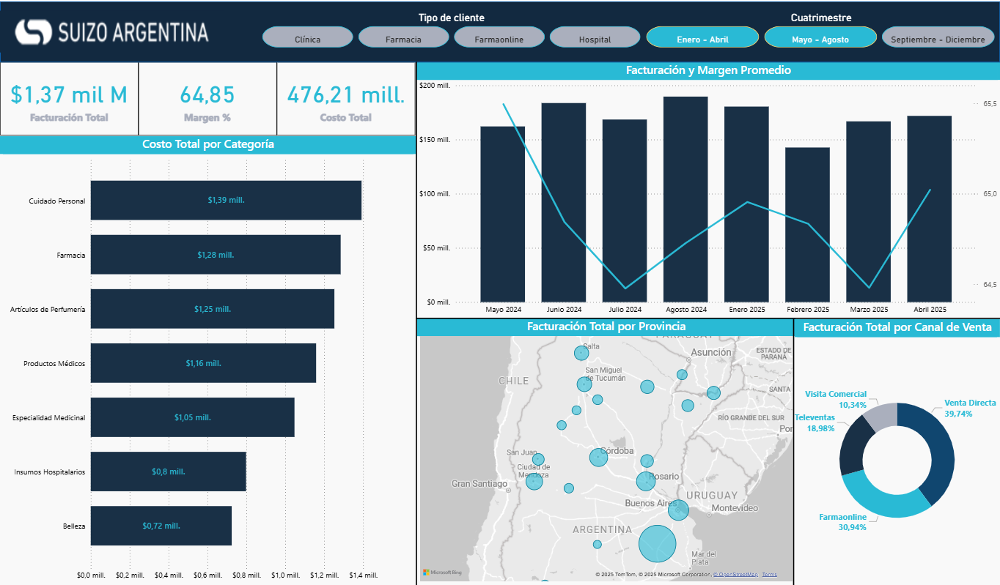

Resumen del Proyecto
Este Dashboard de Power BI mensual facilita el monitoreo eficiente de indicadores clave de ventas, márgenes y costos. Está diseñado para ser una herramienta práctica que optimiza el análisis y la toma de decisiones comerciales. Incluye generación, limpieza y modelado de datos simulados con Python para garantizar calidad y consistencia.

Desarrollo del Proyecto
Generé el conjunto de datos íntegramente con Python utilizando librerías como faker, random, numpy y pandas, simulando con realismo operaciones comerciales de una empresa del rubro salud. Los datos fueron limpiados, transformados y estructurados en tablas relacionadas para su posterior carga en Power BI.
En Power BI diseñé un modelo de datos optimizado, con DAX se implementaron medidas calculadas con variables y funciones de inteligencia temporal para facilitar análisis comparativos mensuales y cuatrimestrales. La visualización integra principios de diseño funcional e identidad visual de la marca, priorizando la claridad, jerarquía informativa y navegación intuitiva.
Este análisis permitió identificar tendencias clave en el desempeño comercial mensual, facilitando la toma de decisiones estratégicas. El principal desafío fue simular datos realistas y coherentes con criterios comerciales y demográficos que reflejaran la operativa típica del sector salud, lo cual fue resuelto mediante un riguroso control en la generación y limpieza. El objetivo fue entregar un dashboard funcional que apoye el seguimiento ágil y efectivo de los KPIs comerciales.
1. Generación de datos con Python
Se creó un conjunto de datos sintéticos con Python para simular operaciones comerciales de una empresa del sector salud. Utilicé librerías como faker, random, numpy y pandas para generar entidades como clientes, productos, facturas y detalles de ventas, respetando reglas de negocio y distribuciones realistas.
Se aplicaron criterios demográficos y comerciales para lograr un nivel alto de verosimilitud. Esta simulación permitió trabajar con un escenario representativo, adaptable y libre de restricciones legales o de confidencialidad.
2. Limpieza y preparación del dataset
Una vez generados los datos sintéticos, se desarrollaron scripts de validación y ajuste en Python para asegurar la coherencia entre las tablas y la integridad de los datos. Se revisaron y modificaron valores inconsistentes en campos clave como precio, categorías y relaciones entre entidades, garantizando su compatibilidad analítica.
Las tablas fueron organizadas con estructuras consistentes y claves compartidas que permitieran una vinculación clara entre entidades, como ventas, productos y clientes. Este enfoque aseguró que el dataset final estuviera listo para su integración directa en Power BI, manteniendo fidelidad lógica y evitando errores en el análisis posterior.
3. Modelado de datos y cálculo de KPIs
El dataset preparado en Python fue cargado en Power BI, donde se construyó un modelo de datos relacional conectando las tablas mediante campos clave. Se adoptó un esquema en estrella para optimizar el rendimiento y facilitar la navegación entre hechos y dimensiones.
Se desarrollaron medidas con DAX para calcular indicadores clave de desempeño (KPIs), incluyendo ventas totales, márgenes, cantidades vendidas y variaciones porcentuales. Se implementaron funciones de inteligencia temporal para comparar resultados mensuales y cuatrimestrales, utilizando variables para mejorar la eficiencia y legibilidad del código.
4. Diseño del Dashboard y análisis de resultados
Se diseñó un dashboard interactivo en Power BI alineado a criterios de claridad visual, identidad de marca y jerarquía informativa. Incluye gráficos dinámicos, tablas, segmentadores y filtros que permiten al usuario explorar los datos con agilidad e intuitivamente.
A partir del análisis, se identificaron tendencias clave en ventas, márgenes y costos, así como variaciones significativas entre periodos. Estas visualizaciones facilitaron la toma de decisiones estratégicas y ofrecieron una visión clara del desempeño comercial. El resultado final fue una herramienta visual potente, adaptable y centrada en el negocio.